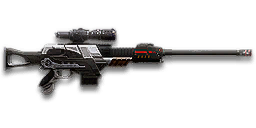

Sage Guide · Terran Republic · Infiltrator
A 325-cert semi-automatic sniper rifle for long range: 10 rounds, a 0.26-second refire, and a free Ballistics Computer that removes scope sway entirely. This page teaches you to land two headshots at ranges where bolt-actions take one — and to keep firing while they rechamber.
The one-line verdict: the cheapest long-range sniper rifle and the most forgiving: two headshots kill at any range, three body shots kill at any range, and its free Ballistics Computer removes scope sway on every scope. It never one-shots — but at 0.52 s for three body shots it punishes misses far less than any bolt-action.

The 99SV · Terran Republic · 10-round magazine · 325 certs
Picture the scene, because you've probably lived it: you're sprinting across a courtyard, an enemy appears, and you do everything at once — hold the trigger down while you're still running, then press aim-down-sights (ADS) a split-second later, finger still down. The sight picture snaps in, it looks precise… and your bullets spray everywhere except the man in your crosshair. He kills you. It feels like the game cheated. It didn't — here's what actually happened.
You started firing from a sprint, from the hip. Sprinting is the least accurate state in the game: your cone of fire starts at 7.0° — fully bloomed, the widest it can ever be. And a semi-auto sniper rifle's hipfire is wide: a 6.0° standing cone, so even standing still your rounds spread across a 0.84 m circle at 8 m.
Then you pressed ADS mid-hold — and nothing reset. Aiming down sights does not shrink a cone of fire that is already bloomed. The scope only gives you a precise picture; the bullets keep flying out of the wide cone you built while running and hipfiring. That's the whole mystery: accurate-looking aim, wildly inaccurate gun. Every shot you fire adds 0.15° of bloom, so a held trigger walks your follow-up shots off the target too.
Two timers stack the deck further: your gun needs about 0.3 s to settle after a sprint, and raising the sight itself takes 0.30 s. Trigger held through all of it means your first half-second of fire is pure confetti — and at 0.26 s per shot, that's two wasted rounds before you even start aiming.
1 · Feet. Let go of sprint (and the trigger, if you're already holding it). Stop, or drop into a strafe — anything but a full sprint. Your aimed cone is 0.0° only when your feet are still.
2 · Sight. Press ADS and let the sight come up. This takes a heartbeat — that's fine, the enemy can't see you yet if you picked your spot. With a 6x scope or higher, hold your breath (Shift) once the sight is up: it almost completely stops the scope sway.
3 · Trigger. Now fire — once, deliberately. Starting from the aimed cone of 0.0°, your first shot lands where the dot points. Then wait for the cone to settle (about 0.27 s — barely longer than the 0.26 s refire) before the next shot. One aimed shot, settle, next shot: that is the whole rhythm of this rifle.
Stop → aim → fire. If you take one habit from this entire page, take this one. You'll practise exactly this rhythm in the trainer in section 04.
Four beats, left to right — the same mistake the cards above describe, drawn out.
1 · SprintingYour cone starts maxed at 7.0° — the widest it can ever be.
2 · Trigger heldFiring from the hip while running — every shot adds bloom.
3 · ADS, mid-holdThe sight looks precise — but aiming down sights does not reset bloom.
4 · The sprayBullets fly out of the wide cone you built. The enemy walks away.
Same fight, done right. Each beat has a job, and the order is the whole lesson.
1 · StopLet go of sprint (and the trigger). About 0.3 s for the gun to settle.
2 · AimPress ADS and let the sight come up (~0.15 s).
3 · FireNow fire — from the aimed cone. First shots land where the dot points.
The exception — under ~8 m, skip the whole danceHipfire works, no ADS needed, and stopping is optional. Keep moving, strafe, and let the hipfire ring do the work.
One honest difference from the picture above: the exception panel says hipfire works under ~8 m. On a semi-auto sniper rifle it barely does — your hipfire ring is 0.84 m wide standing still at 8 m, wider than a man's chest. Under 8 m your honest options are the sidearm, or a hipfire burst and a knife. Don't trust sniper hipfire past arm's length.
Every enemy infantry has 1,000 health (500 shield + 500 health). Your bullet does 450 damage up close, fading to 334 at 150 m. Headshots count ×2.0, leg shots count less (×0.9). That gives you three numbers worth memorising: two headshots kill at any range; three body shots kill at any range; and one headshot plus one body shot also kills at any range — 900+450 up close, and 668+334 = 1002 at the floor.
| Range | Damage | Head | Chest | Legs | Chest vs Nanoweave | Chest vs shielded Heavy | Head vs shielded Heavy |
|---|---|---|---|---|---|---|---|
| Close · 0–50 m | 450 | 2 | 3 | 3 | 3 | 4 | 2 |
| Falling off · 50–150 m | 450→334 | 2 | 3 | 3 → 4 | 3 → 4 | 4 → 5 | 2 → 3 |
| At the floor · 150–250 m | 334 | 2 | 3 | 4 | 4 | 5 | 3 |
Perfect-accuracy times to kill: two headshots take 0.26 s, three body shots take 0.52 s — the same at every range, because even your minimum damage still three-shots. Magazine: 10 rounds, with 60 in reserve.
Full power to 50 m, then a steady slide to minimum at 150 m. The gold dashed line is the 500 = two-body-shot line (out of reach).
Nanoweave armour: since the Arsenal Update, sniper rifles use their own resistance type — Nanoweave cuts body and leg damage by 20% and does nothing to headshots. Your two-headshot kill is untouched. Body shots are what suffer: against a full-Nanoweave target you need four body shots instead of three (0.78 s instead of 0.52 s). One headshot plus one body shot still kills at any range, Nanoweave or not — the headshot carries it.
One rifle, four fighting styles. The right technique changes with distance — use the range finder below to see what your bullets do at any range, then learn the four bands underneath it. Your bullet drops as it flies (gravity 7.5 m/s², a third less than most rifles) and takes time to arrive — at 200 m it drops 0.5 m and takes 0.36 s to get there. Lead moving targets and aim above the head at long range.
How to fight here
Aim: centre of the chest, from the hip. Keep moving.
Scoping in costs you time and halves your move speed — at arm's length that gets you killed. Your hipfire cone is wide (6.0°), but at 8 m the ring is 0.84 m across a 1.8 m man: hipfire the chest and keep strafing. Three body shots, 0.52 s.
Aim: the head. Two quick shots.
Full 450 damage to 50 m, still strong to 150 m. Feet planted, 6x scope up — and no sway, ever, because the Ballistics Computer is built in and always on — crosshair on the head. Two headshots in 0.26 s ends the fight faster than any bolt-action can fire once. This is where the 99SV earns its keep.
Aim: the head. Two quick shots.
Damage is flat at 334 now — still two headshots, still three body shots. Your 550 m/s bullet drops 0.50 m at 200 m and takes 0.36 s to get there: lead moving targets, aim a touch high. The fight is the same, the margin is thinner.
Aim: the head. Two quick shots.
Three body shots still kill, but at this range you are a loud advertisement of your position for a 0.52 s kill. Take these shots at stationary or fleeing targets. Otherwise, close the distance — or switch to a bolt-action, which does this job in one round.
Your accuracy is decided by two things before skill even enters it: what your body is doing (your stance sets the starting cone of fire) and what your finger is doing (holding the trigger grows that cone with every shot). The 99SV has no fire-mode switch — semi-automatic only — so "firing modes" are something you do with your finger, not a setting on the gun. 6x–12x scopes sway — the crosshair drifts on its own, and higher magnification magnifies the sway. Hold your breath (Shift, default) to almost completely stop it; the Target Focus implant makes the breath last longer.
| Stance | Starting cone | What it means for you |
|---|---|---|
| Sprinting | 7.0° | Maxed out — the widest the cone can be. This is the section 01 disaster: never start firing from a sprint. |
| Hipfire, moving | 6.5° | Walking or strafing from the hip. The 0.91 m ring at 8 m in section 05 is this stance drawn out. |
| Hipfire, standing | 6.0° | Your point-blank default. The 0.84 m ring at 8 m in section 05 is this stance drawn out. |
| Hipfire, crouched | 5.5° | The tightest hipfire you have. Crouch when holding a doorway from the hip. |
| Aimed (ADS), feet planted | 0.0° | Standing or crouched makes no difference here — a dot, not a cone. This is why section 01's order matters. |
| Aimed (ADS), strafing | 0.25° | More than twice the planted cone, and you move at half speed (0.5×). Strafe between shots to stay hard to hit; plant your feet during each shot. |
| Mode | How your finger does it | Use it at |
|---|---|---|
| One aimed shot — the default | Press the trigger once, let the cone settle (~0.27 s), press again | Almost everything. One shot is n_still = 1: your aimed cone stays at 0.0° if you fire one round and wait. |
| Double-tap | Two quick shots, 0.26 s apart | A standing target at close range. The second shot leaves a 0.15–0.20° cone — still on target at 50 m, but you are spending accuracy you will want for the next target. |
| The mag dump | Hold the trigger and don't let go | Nowhere. Bloom is 0.15–0.20° per shot and your aimed cone caps at 2.0° — past ~3 rounds you are spraying, not aiming. Ten rounds is not a magazine, it is ten aimed shots. |
A target 50 m away, aiming down sights. Press and hold FIRE (mouse, touch, or hold Space with the button focused) and watch the holes walk wider the longer you hold — that's firing from an ever-growing cone. Release, let the cone settle (~0.27 s), fire again. Aim for one shot at a time; two is tolerable while you're new. This practice window is shared by the whole Sage series: it's driven by a weapon profile plugged into the window — here the 99SV's (260 ms refire, 0.0° starting cone, 0.15° bloom per shot, target at 50 m) — and the spread is drawn at true scale from those numbers.
Cone of fire — fills as you hold, empties when you release.
Your shots will be graded here — one at a time is ideal, two is tolerable.
Some things are easier to show than to say. Here's what your bullets actually do: how wide hipfire spreads at 8 metres, what a good shot rhythm looks like, and what the 6x and 12x sights really change. The hands-on version — taking the shot yourself — is the practice window in section 04.
A full-size target 8 m away — an arm's-length room fight. The rings show where hipfire rounds land around your aim point (the chest). Sizes are drawn to scale from the gun's real cone-of-fire numbers.
Read it this way: standing still, the 0.84 m ring is wider than a man's chest — a third of your hipfire rounds miss a target this size even when you aim dead centre, which is why sniper hipfire is a last resort, not a tactic. Move and it grows to 0.91 m — past ~10 m that's rounds missing entirely: the exact moment to switch to aiming down sights, where the spread shrinks to a dot. (Ring sizes use the real geometry: spread diameter = 2 × distance × tan(cone ÷ 2).)
Every shot widens your cone of fire ("bloom"). Releasing the trigger for a heartbeat resets it. Same 6 rounds, two very different outcomes:
The target pattern is one aimed shot at a time — that's the ideal. Two shots is fine while you're new (call it newbie tolerance). Past that, the bloom (0.15° per shot aimed) keeps growing with every shot, so the extra bullets mostly decorate the wall behind your enemy instead of hitting him. One shot, a 0.27 s settle, next shot — and with a 10-round magazine, you have room for three more targets after the first.
The target at 150 m is small but the view is wide open — you see the crate, the tower, and the next enemy coming. Fast to aim, nothing blocks your edges.
Same target, same 150 m — but he looks much taller, so placing shots on his head gets much easier. The price: your view narrows to the round window, the crate and tower are gone, and close targets feel fast and huge.
That's the whole 30-cert decision from section 06 in one picture: 6x for the working range, 12x for the far edge. The 12x shows you the head at 150 m — and magnifies your sway and recoil with it, so hold your breath.
Honest news first: the rifle arrives with a 6x scope and nothing else — no rail, no barrel, no ammo. Nothing here is free except the 6x, so buy in the order shown and stop whenever the gun feels right. Everything below is an optional sidegrade, not an upgrade.
A 6x scope, built into the rifle. Your working sight — see section 05 for what it shows at 150 m.
Good: your default; good to ~250 m, and the only scope you need while learning.
Bad: past 250 m the head is small — that's the 8x/10x/12x's job.
More magnification, same sway. The 8x is the sweet spot for a ~246 m one-shot range; the 10x and 12x are for the far edge. All four cost the same — pick by range, not by price.
Good: picking out heads past 200 m; the 12x makes a 300 m head look like a 25 m one.
Bad: close targets feel fast and huge; sway and recoil magnify with the zoom, so hold your breath.
Plenty of veterans run this slot empty forever. A sniper rifle's recoil is a single shot — there is nothing to control.
Good: your first weeks. Spend certs on your suit and infiltrator tools first.
Bad: nothing — there's no downside to an empty slot.
You vanish from the minimap when firing and your shots are quiet. In exchange, damage starts dropping off 20 m sooner and bullets fly 15% slower (550 → 468 m/s) — harder to lead moving targets at range.
Good: flanking behind enemy lines, rooftop and tree work, solo play behind the front.
Bad: front-line fighting where everyone already knows where you are — you pay the damage cost for stealth you don't need.
Completely removes scope sway on all scopes. Unlocked and equipped by default — you already own it, and it is the reason this rifle needs no breath-holding at all.
Good: every shot past 50 m: your crosshair simply does not drift.
Bad: nothing — it is free, and it is the 99SV's signature advantage.
Swapping to the rifle is 30% faster and horizontal recoil drops 20%, but vertical recoil rises 20%. On a sniper rifle the recoil barely matters — the swap speed is what you're buying.
Good: quick-scoping and weapon swaps; getting the rifle up fast after a spot.
Bad: if you never swap weapons mid-fight, it does nothing for you.
Removes the weapon's aim-down-sights moving accuracy penalty — your strafing cone becomes your planted cone — but you move 33% slower while aiming.
Good: holding a lane and strafing while scoped, where the tighter cone matters more than the speed.
Bad: aggressive play — a third slower while scoped makes you an easier target.
A torch whose beam reveals cloaked infiltrators. Toggle it with the attachment key (X by default).
Good: hunting a stalker infiltrator camping your capture point — sweep corners with it.
Bad: as your everyday rail — it gives zero accuracy help, and the beam advertises your position.
This rifle has no ammo attachments — no Soft Point, no High Velocity. Its damage curve is what it is, and the numbers in section 02 are the whole story.
0 certs in attachments · The gun itself
What 325 certs buys you before a single attachment — Ballistics Computer included, sway-free from the first shot. Genuinely usable — learn the rifle on this before spending anything.
130 certs in attachments · Recommended
The best value in this whole guide. An 8x scope for the 150 m band and a fast swap — and nothing else to buy, because the Ballistics Computer is already yours.
130 certs in attachments · Flanking
Built to shoot from a rooftop nobody is watching. No minimap dot, quiet shots, and the 7x for the range. Swap back to the Long-Range Kit on the front line.
230 certs in attachments · Lane
12x magnification for the far edge, with the tightest strafing cone you can buy. Weak up close — fight from cover, at range.
A sniper rifle is a planted weapon. Find a ridge, a rooftop, or a rock with cover at your back and an escape route behind it — then stop moving. The player who picks the range usually wins the duel; a sniper picks it before the enemy even spawns.
Headshots deal double damage: two kill in 0.26 s, versus three body shots in 0.52 s. Don't aim at the head directly — aim at the neck and let the second shot land where the first one pushed your aim. Two quick headshots are the whole rifle; the body shots are your backup plan.
Every shot adds bloom to your cone, and the cone only settles ~0.27 s after the shot — barely longer than the 0.26 s refire. Fire the instant the refire ends and you're shooting a 0.15–0.20° cone, not a 0.0° one. Wait the extra blink. Your ten rounds are ten aimed shots, not a magazine to empty.
With a 6x scope or higher, hold Shift once the sight is up: it almost completely stops the scope sway. But the breath runs out, and the Target Focus implant is what extends it. At close range with a 1x–4x scope there is no sway at all — don't waste the breath you don't need.
Reloading with even 1 bullet left takes 2.125 s; an empty rifle takes 2.975 s — an eternity mid-fight. Count roughly: after two or three kills, duck behind cover and reload early. Treat the last two rounds as your emergency reserve, not your working magazine.
A sniper rifle's tracer is thick and long, and your minimap dot reaches 100 m. Every shot you fire is a flare that says 'here I am'. After a kill — or a miss — relocate: ten metres sideways is enough to make the counter-sniper's return shot miss. The rifle that stays in one place is the rifle that dies in one place.
Every gun has a price. Here's where the 99SV pays — and the habit that covers each hole.
Two headshots is the fastest kill you have — 0.26 s — and a bolt-action does it in one round, instantly. Against a target who is already shooting back, that 0.26 s is the whole fight.
Play around it: Play around it: don't duel fair. Shoot from cover, from range, from behind — the enemy should be dead before he knows where the second shot came from.
Bloom is 0.15° per shot and your aimed cone caps at 2.0° — past ~3 rounds you are decorating the wall behind your enemy, not hitting him. Ten rounds is not a magazine, it is ten aimed shots.
Play around it: Play around it: one shot, settle, next shot (habit 3) — and use the trainer in section 04 until the rhythm is automatic.
With a 6x scope or higher, the crosshair drifts on its own — and higher magnification magnifies the sway. At 12x the sway can walk your shot off a head at 200 m.
Play around it: Play around it: hold your breath (Shift) for the shot, and buy the Target Focus implant when you can — it makes the breath last longer. Or drop to a lower magnification: the sway shrinks with the zoom.
2.125 s with rounds left, 2.975 s on empty — and you only have 10 rounds. Three kills and the magazine is dry.
Play around it: Play around it: reload early and only in cover (habit 5), and count your rounds — two kills, then reload, every time.
Every shot puts you on enemy minimaps from 100 m away, and your tracer is thick and long. A good counter-sniper reads your first shot and answers it.
Play around it: Play around it: move after every kill (habit 6), and take the Suppressor when the fight is worth the damage cost — it erases the minimap dot entirely.
Open the world map, travel to VR Training, and run these on the target dummies. Five minutes before a play session beats an hour of dying confused.
At 50 m, kill dummies with two headshots — 0.26 s, no more. If the second shot misses, you rushed it: slow down until both shots land, then speed up again. Two clean headshots in a row is the goal.
At 50 m, kill dummies with single shots and a full 0.27 s settle between them. If a shot goes wide, you fired before the cone settled. Goal: whole kills without a single wild round — even though your aimed cone caps at just 2.0°, bloom still moves the later shots.
At 150 m with your 6x scope, hold your breath (Shift) and kill dummies only while the breath lasts. When the sway returns, stop firing and wait for it to recover. Learn exactly how long your breath lasts — and how long it takes to come back.
Kill one dummy, then move ten metres sideways to a new position before the next shot. Repeat five times. This is habit 6 made automatic: never fire twice from the same spot.
Fire exactly five rounds, step behind a pillar, reload, repeat. Train your hands to reload early and only in cover until it's automatic — with a slow reload, in real fights you'll do it without thinking, which is the point.